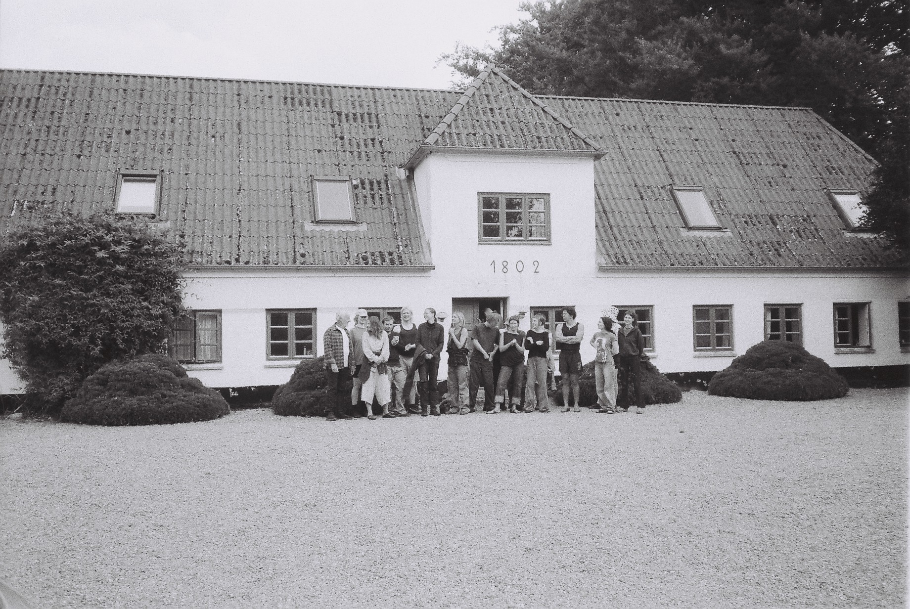
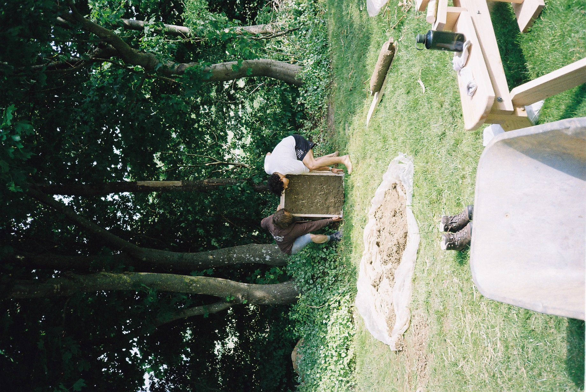
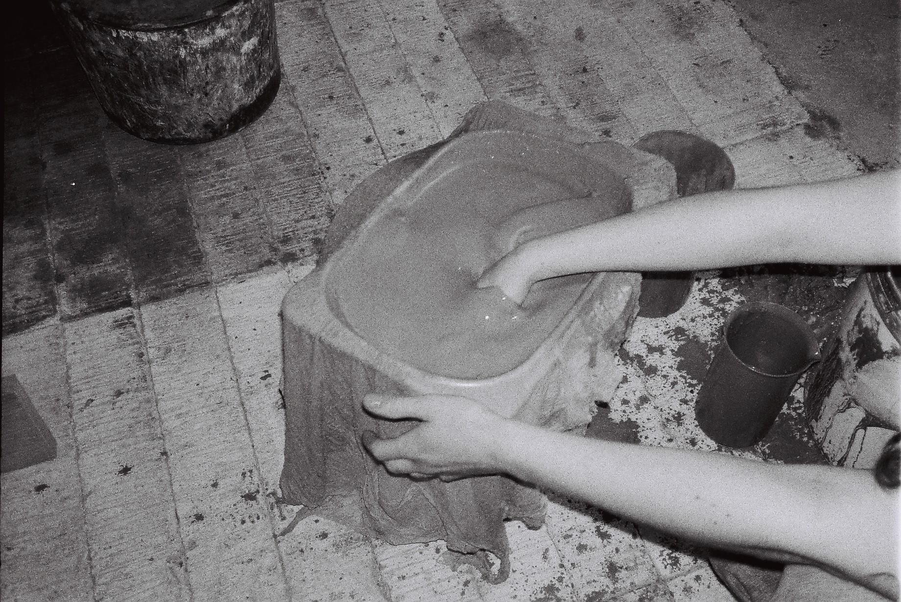
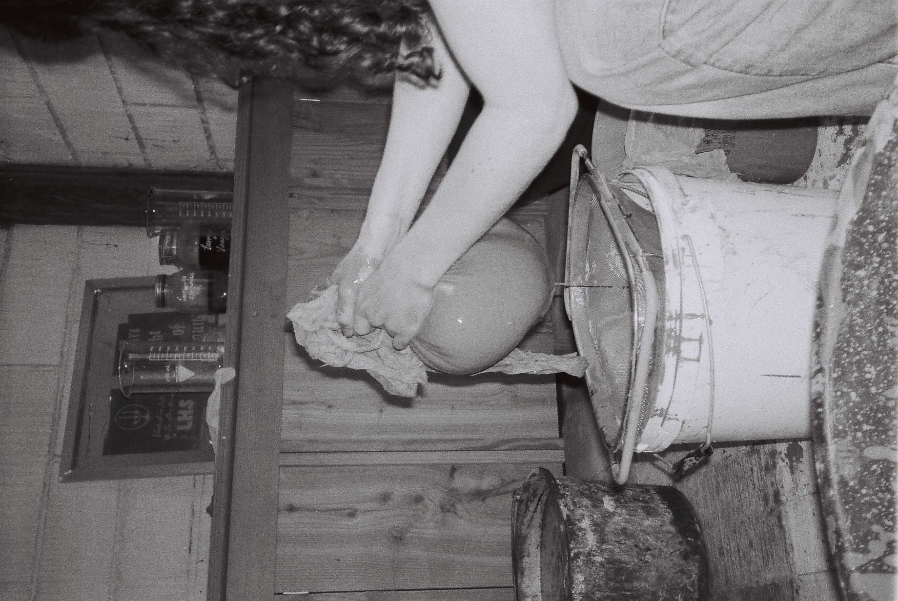

The Heart Compared to a Seed link
Hosting and teaching together with Torkild Heland Kleppe, Lærke Lyhne, Juliette Joy Ringrose and Ada Zalecka.
Guested by Nickie Sigurdsson & Ronja Busk
21.05.25 - 25.05.25, ORBI, Jels (DK)
"At this years Spring School, we will spread out into landscape and collect plants for a herbarium. A herbarium is traditionally a scientific collection of dried and pressed plants with field notes and relevant information. Our understanding of a herbarium is a poetic tool to map the landscape—a situated and personal collection that can help shape our awareness of relationships in the landscape."

The house of ORBI

Context-crete

Landscape walk with Janne Dinesen

Shaping clay into clay masks

Shaping clay into clay masks

cutting plant fibers

cutting plant fibers

Context-crete elements